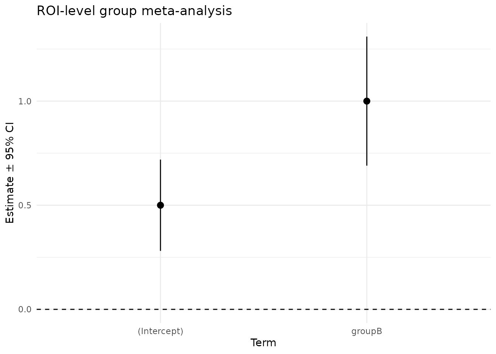

vignettes/group_analysis.Rmd
group_analysis.Rmdtitle: “07. Group Analysis” author: “Bradley R. Buchsbaum” date: “2025-09-01” output: rmarkdown::html_vignette vignette: > % % % —
Overview
This vignette demonstrates a simple ROI-based group analysis using fmrireg:
- Construct a group dataset from a small tabular data frame
- Fit fixed-effects and random-effects meta-analytic models
- Include a group covariate for a two-group comparison
- Extract and visualize results
The same workflow generalizes to voxelwise analysis by using
HDF5/NIfTI inputs via
group_data(format = "h5"|"nifti").
Create a small ROI dataset
We simulate 10 subjects across two groups (A/B) for a single ROI. Group B has an effect that is 1 unit larger than group A. All subjects have the same SE for clarity.
n_per_group <- 5
subjects <- sprintf("s%02d", 1:(2 * n_per_group))
group <- factor(rep(c("A", "B"), each = n_per_group))
# True effects: A = 0.5, B = 1.5 (difference = 1.0)
beta <- ifelse(group == "A", 0.5, 1.5)
se <- rep(0.25, length(beta))
roi_df <- data.frame(
subject = subjects,
roi = "ExampleROI",
beta = beta,
se = se,
group = group,
stringsAsFactors = FALSE
)
# Build group dataset (CSV/ROI format)
gd <- group_data(
roi_df,
format = "csv",
effect_cols = c(beta = "beta", se = "se"),
subject_col = "subject",
roi_col = "roi",
covariate_cols = c("group")
)
gd
#> Group Data Object
#> Format: csv
#> Subjects: 10
#> Covariates: groupFit group meta-analysis
We first fit an intercept-only model, then a model including a group term.
# Intercept-only (grand mean across subjects)
fit_fe <- fmri_meta(gd, formula = ~ 1, method = "fe", verbose = FALSE)
# Intercept + group term (difference-coding for group B relative to A)
fit_cov <- fmri_meta(gd, formula = ~ 1 + group, method = "fe", verbose = FALSE)
print(fit_cov)
#> fMRI Meta-Analysis Results
#> ==========================
#>
#> Method: fe
#> Robust: none
#> Formula: ~1 + group
#> Subjects: 10
#> ROIs analyzed: 1
#>
#> Heterogeneity:
#> Mean tau²: 0
#> Mean I²: NaN %
summary(fit_cov)
#> fMRI Meta-Analysis Summary
#> ==========================
#>
#> fMRI Meta-Analysis Results
#> ==========================
#>
#> Method: fe
#> Robust: none
#> Formula: ~1 + group
#> Subjects: 10
#> ROIs analyzed: 1
#>
#> Heterogeneity:
#> Mean tau²: 0
#> Mean I²: NaN %
#>
#> Coefficients:
#> (Intercept):
#> Mean effect: 0.5
#> Mean SE: 0.1118034
#> Significant:1/1 (100%)
#> groupB:
#> Mean effect: 1
#> Mean SE: 0.1581139
#> Significant:1/1 (100%)Note: With equal SE per subject, fixed-effects and random-effects
will yield similar point estimates. Random-effects
(method = "pm") will estimate between- subject
heterogeneity (tau2) when present.
fit_pm <- fmri_meta(gd, formula = ~ 1 + group, method = "pm", verbose = FALSE)
summary(fit_pm)
#> fMRI Meta-Analysis Summary
#> ==========================
#>
#> fMRI Meta-Analysis Results
#> ==========================
#>
#> Method: pm
#> Robust: none
#> Formula: ~1 + group
#> Subjects: 10
#> ROIs analyzed: 1
#>
#> Heterogeneity:
#> Mean tau²: 0
#> Mean I²: NaN %
#>
#> Coefficients:
#> (Intercept):
#> Mean effect: 0.5
#> Mean SE: 0.1118034
#> Significant:1/1 (100%)
#> groupB:
#> Mean effect: 1
#> Mean SE: 0.1581139
#> Significant:1/1 (100%)Extract coefficients and a contrast
coef_names <- colnames(fit_cov$coefficients)
coef_names
#> [1] "(Intercept)" "groupB"
# Intercept should be near 0.5, the group coefficient near 1.0
coef_est <- as.numeric(fit_cov$coefficients[1, ])
names(coef_est) <- coef_names
coef_est
#> (Intercept) groupB
#> 0.5 1.0
# Build a simple contrast on the group term (if present)
if (any(grepl("group", coef_names))) {
# Create a named weight vector that picks out the group coefficient
w <- rep(0, length(coef_names)); names(w) <- coef_names
w[grep("group", coef_names)] <- 1
con <- contrast(fit_cov, w)
con
}
#> $estimate
#> [1] 1
#>
#> $se
#> ExampleROI
#> 0.1581139
#>
#> $z
#> [1] 6.324555
#>
#> $p
#> [,1]
#> ExampleROI 2.539629e-10
#>
#> $weights
#> (Intercept) groupB
#> 0 1
#>
#> $name
#> [1] "groupB"
#>
#> $parent
#> fMRI Meta-Analysis Results
#> ==========================
#>
#> Method: fe
#> Robust: none
#> Formula: ~1 + group
#> Subjects: 10
#> ROIs analyzed: 1
#>
#> Heterogeneity:
#> Mean tau²: 0
#> Mean I²: NaN %
#>
#> attr(,"class")
#> [1] "fmri_meta_contrast"A quick visualization
We can visualize the group effects and their 95% CIs for the ROI-level fit.
df_tidy <- tidy(fit_cov, conf.int = TRUE)
df_tidy
#> # A tibble: 2 × 10
#> roi term estimate std.error statistic p.value tau2 I2 conf.low
#> <chr> <chr> <dbl> <dbl> <dbl> <dbl> <dbl> <dbl> <dbl>
#> 1 ExampleROI (Interc… 0.5 0.112 4.47 7.74e- 6 0 NA 0.281
#> 2 ExampleROI groupB 1 0.158 6.32 2.54e-10 0 NA 0.690
#> # ℹ 1 more variable: conf.high <dbl>
ggplot(df_tidy, aes(x = term, y = estimate, ymin = conf.low, ymax = conf.high)) +
geom_pointrange() +
geom_hline(yintercept = 0, linetype = 2) +
labs(title = "ROI-level group meta-analysis",
x = "Term", y = "Estimate ± 95% CI") +
theme_minimal()
Notes on voxelwise analysis
For voxelwise analysis, construct group_data with format
"h5" or "nifti":
# HDF5 (produced via write_results.fmri_lm)
# gd_h5 <- group_data(h5_paths, format = "h5",
# subjects = subject_ids,
# contrast = "ContrastName",
# covariates = data.frame(group = group))
# NIfTI (provide per-subject paths for beta/SE or t)
# gd_nii <- group_data(list(beta = beta_paths, se = se_paths), format = "nifti",
# subjects = subject_ids,
# mask = "group_mask.nii.gz")
# fit <- fmri_meta(gd_h5, formula = ~ 1 + group, method = "pm")
# fit <- fmri_meta(gd_nii, formula = ~ 1, method = "fe")For multiple comparisons correction that leverages spatial structure,
see spatial_fdr() and create_3d_blocks().
Minimal NIfTI Example (Reproducible)
This chunk creates tiny synthetic NIfTI volumes on disk (in a temp dir) for a voxelwise demonstration. Group B has a higher effect in a small cube.
library(neuroim2)
set.seed(42)
tmpdir <- tempdir()
space <- NeuroSpace(c(8, 8, 8), spacing = c(2, 2, 2))
n_per_group <- 3
ids <- sprintf("sub-%02d", 1:(2 * n_per_group))
grp <- factor(rep(c("A", "B"), each = n_per_group))
# Define a small active cube: x=3:5, y=3:5, z=3:5
active <- array(FALSE, dim = c(8, 8, 8))
active[3:5, 3:5, 3:5] <- TRUE
beta_paths <- character(length(ids))
se_paths <- character(length(ids))
for (i in seq_along(ids)) {
b <- array(0, dim = c(8, 8, 8))
# Baseline effect in active region
b[active] <- if (grp[i] == "A") 0.5 else 1.5
# Small random noise per voxel (optional)
b <- b + array(rnorm(length(b), sd = 0.05), dim = dim(b))
v_beta <- NeuroVol(b, space)
# Constant SE per voxel
s <- array(0.25, dim = c(8, 8, 8))
v_se <- NeuroVol(s, space)
beta_paths[i] <- file.path(tmpdir, sprintf("%s_beta.nii.gz", ids[i]))
se_paths[i] <- file.path(tmpdir, sprintf("%s_se.nii.gz", ids[i]))
write_vol(v_beta, beta_paths[i])
write_vol(v_se, se_paths[i])
}
# Mask covers all voxels
mask_path <- file.path(tmpdir, "mask.nii.gz")
write_vol(NeuroVol(array(1, dim = c(8, 8, 8)), space), mask_path)
# Build group_data and fit voxelwise meta-analysis
gd_nii <- group_data_from_nifti(
beta_paths = beta_paths,
se_paths = se_paths,
subjects = ids,
covariates = data.frame(group = grp),
mask = mask_path
)
fit_nii <- fmri_meta(gd_nii, formula = ~ 1 + group, method = "fe", verbose = FALSE)
fit_nii
#> fMRI Meta-Analysis Results
#> ==========================
#>
#> Method: fe
#> Robust: none
#> Formula: ~1 + group
#> Subjects: 6
#> Voxels analyzed: 512
#>
#> Heterogeneity:
#> Mean tau²: 0
#> Mean I²: 0 %
# Get p-values for the group term and count discoveries (uncorrected)
group_col <- grep("group", colnames(fit_nii$coefficients))
pvals <- 2 * pnorm(-abs(fit_nii$coefficients[, group_col] / fit_nii$se[, group_col]))
sum(pvals < 0.05)
#> [1] 27
# Optionally, apply spatial FDR (group term), using simple blocks
sfr <- spatial_fdr(fit_nii, p = colnames(fit_nii$coefficients)[group_col], group = "blocks")
sum(sfr$reject)
#> [1] 75
# Reconstruct an image for the group effect estimate
img_group_est <- coef_image(fit_nii, colnames(fit_nii$coefficients)[group_col], statistic = "estimate")
range(as.array(img_group_est), na.rm = TRUE)
#> [1] -0.09585902 1.08515382Two-sample t-test (Welch and OLS) on NIfTI
As an alternative to meta-analysis, we can run two-sample voxelwise t-tests directly on the per-subject beta maps, using either Welch’s unequal-variance test or a standard OLS/Student t-test via a simple design matrix.
# Extract subject x voxel matrix of betas using the mask
dat <- read_nifti_full(gd_nii)
Y <- dat$beta # S x P (subjects x voxels)
# Group indicator
g_int <- as.integer(grp) # 1=A, 2=B
X <- cbind("(Intercept)" = 1, # OLS design for Student t
group = as.integer(grp == "B"))
# Welch two-sample t-test across features
w <- welch_t_cpp(Y, g_int)
t_welch <- as.numeric(w$t) # length P
df_welch <- as.numeric(w$df)
p_welch <- 2 * pt(abs(t_welch), df = df_welch, lower.tail = FALSE)
# OLS (Student) two-sample t-test via design matrix
ols <- ols_t_cpp(Y, X)
# Handle missing dimnames on t matrix: use rowname if available, else fall back to 2nd row
rnames_t <- rownames(ols$t)
if (!is.null(rnames_t) && any(rnames_t == "group")) {
t_ols <- ols$t["group", ]
} else {
t_ols <- ols$t[2, ]
}
df_ols <- rep(ols$df, ncol(Y))
p_ols <- 2 * pt(abs(t_ols), df = df_ols, lower.tail = FALSE)
# Reconstruct quick image for Welch t (using the same mask/space)
timg_welch <- NeuroVol(array(NA_real_, dim = c(8, 8, 8)), space)
timg_welch[as.array(neuroim2::read_vol(mask_path)) > 0] <- t_welch
range(as.array(timg_welch), na.rm = TRUE)
#> [1] -81.539233 4.582865
# Count uncorrected significant voxels at alpha=0.05
sum(p_welch < 0.05)
#> [1] 46
sum(p_ols < 0.05)
#> [1] 51